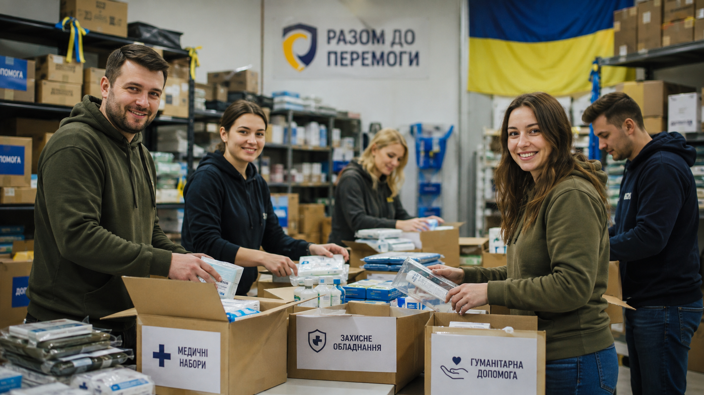

01 · Безпека та оборона
Безпека та оборона
Фонд підтримує ініціативи, спрямовані на посилення спроможності сил оборони України та захист людей у громадах, які найбільше постраждали від війни. Допомога може включати обладнання, транспорт, засоби зв’язку, технічне оснащення, захисне спорядження та інші ресурси відповідно до актуальних потреб.